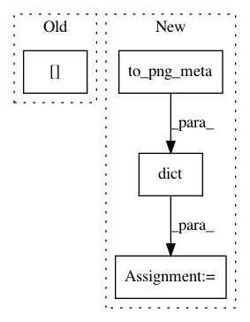

b1cfbe458c0bf123591348c54973d49297fd55ab,tools/manual/detected_faces.py,_DiskIO,_background_extract,#_DiskIO#Any#Any#,389
Before Change
face.hash, b_image = encode_image_with_hash(aligned.face, extension)
saver.save(output, b_image)
final_faces.append(face.to_alignment())
self._alignments.data[basename]["faces"] = final_faces
saver.close()
After Change
image=image,
centering="head",
size=512) // TODO user selectable size
meta = dict(alignments=face.to_png_meta(),
source=dict(alignments_version=self._alignments.version,
original_filename=output,
face_index=face_idx,
source_filename=src_filename,
source_is_video=self._globals.is_video))
b_image = encode_image(aligned.face, extension, metadata=meta)
saver.save(output, b_image)
saver.close()
In pattern: SUPERPATTERN
Frequency: 3
Non-data size: 4
Instances
Project Name: deepfakes/faceswap
Commit Name: b1cfbe458c0bf123591348c54973d49297fd55ab
Time: 2021-02-14
Author: 36920800+torzdf@users.noreply.github.com
File Name: tools/manual/detected_faces.py
Class Name: _DiskIO
Method Name: _background_extract
Project Name: deepfakes/faceswap
Commit Name: b1cfbe458c0bf123591348c54973d49297fd55ab
Time: 2021-02-14
Author: 36920800+torzdf@users.noreply.github.com
File Name: tools/alignments/jobs.py
Class Name: Extract
Method Name: _output_faces
Project Name: deepfakes/faceswap
Commit Name: b1cfbe458c0bf123591348c54973d49297fd55ab
Time: 2021-02-14
Author: 36920800+torzdf@users.noreply.github.com
File Name: tools/mask/mask.py
Class Name: Mask
Method Name: _update_faces